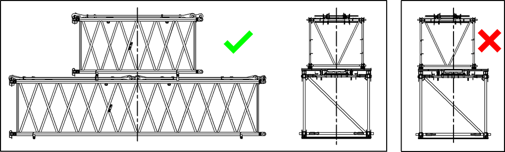
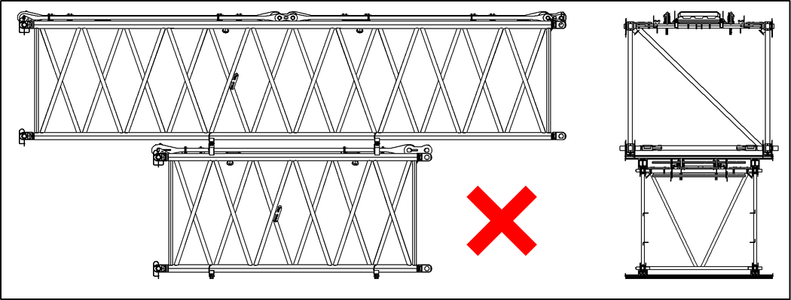
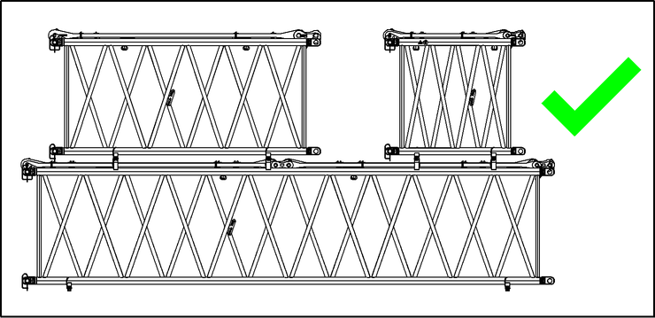
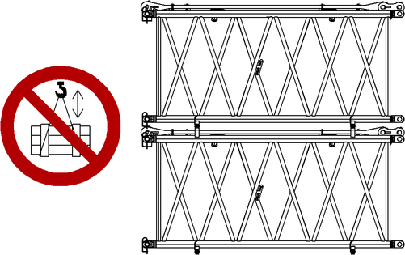
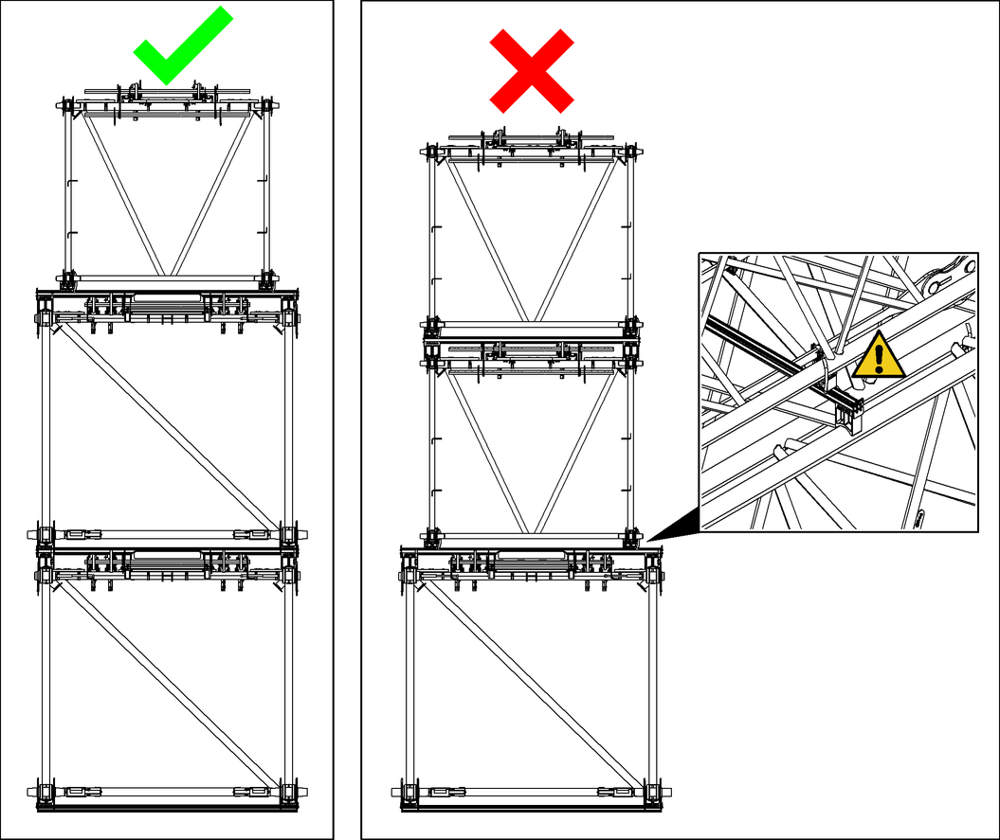

Ausleger-Zwischenstücke stapeln

WARNUNG
Unsachgemäße Verwendung der Stapelvorrichtung!
Tod durch herabfallende Ausleger-Zwischenstücke, Beschädigung der Ausleger-Zwischenstücke.
Stapelvorrichtung ausschließlich zur Lagerung von Ausleger-Zwischenstücken verwenden. |
Sicherheitshinweise zur Verwendung der Stapelvorrichtung beachten. |

WARNUNG
Unzulässige oder unsachgemäße Vorgehensweise!
Schwere Verletzungen, Beschädigung der Maschine.
Wenn Informationen in der Betriebsanleitung unzureichend sind: | |
Liebherr-Kundendienst kontaktieren. | |

Hinweis
Gesamtgewicht der gestapelten Ausleger-Zwischenstücke wirkt mit kleiner Auflagefläche auf Untergrund!
Sicherstellen, dass Untergrund des Lagerorts ausreichend tragfähig ist. |
Transport von mit Stapelvorrichtung gestapelten Zwischenstücken ist verboten. Bodenträger oder Zwischenträger dürfen nicht als Transportunterlage verwendet werden.
Immer Bodenträger (oder gleichwertige, tragfähige Holzunterlage) verwenden.

Fig. 5918: Ausleger-Zwischenstücke mittig platzieren
Fig. 5918: Ausleger-Zwischenstücke mittig platzieren
Ausleger-Zwischenstücke mittig stapeln.

Fig. 5919: Längeres und breiteres Zwischenstück unten platzieren
Fig. 5919: Längeres und breiteres Zwischenstück unten platzieren
Das kürzere und schmälere Ausleger-Zwischenstück oben platzieren.

Fig. 5920: Kleinere Ausleger-Zwischenstücke demontieren
Fig. 5920: Kleinere Ausleger-Zwischenstücke demontieren
Ausleger-Zwischenstücke 6 m (20 ft) und Ausleger-Zwischenstücke 3 m (10 ft) entbolzen und jeweils zwei Zwischenträger je Ausleger-Zwischenstück unterlegen.

Fig. 5921: Gestapelte Ausleger-Zwischenstücke nicht zusammen heben
Fig. 5921: Gestapelte Ausleger-Zwischenstücke nicht zusammen heben
Ausleger-Zwischenstücke ausschließlich einzeln anheben.

Fig. 5922: Durchbiegung des Zwischenträgers vermeiden
Fig. 5922: Durchbiegung des Zwischenträgers vermeiden
Maximal eine Lage Ausleger-Zwischenstücke mit schmalerer Abmessung stapeln, um Durchbiegung des Zwischenträgers zu vermeiden.
Vorgeschriebene Abstände der Bodenträger zum Gabelfinger oder zum Gabelzinken laut folgender Tabelle einhalten:
Benennung | Wert | |
|---|---|---|
x | Ausleger-Zwischenstück 3 m (10 ft) | ≤ 600 mm (1.97 ft) |
Ausleger-Zwischenstück 6 m (20 ft) | ≤ 1000 mm (3.28 ft) | |
Ausleger-Zwischenstück 12 m (40 ft) | ≤ 1000 mm (3.28 ft) | |
Technische Daten - Abstand der Bodenträger zu Verbolzungspunkten
Sicherstellen, dass folgende Voraussetzungen erfüllt sind:
❑ | Untergrund ist eben und tragfähig. |
❑ | Untergrund ist frei von Schnee und Eis. |
❑ | Schwerpunkte der Ausleger-Zwischenstücke sind bekannt. |